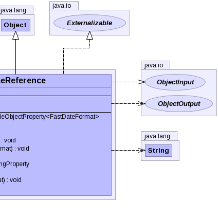

public class TimeReference extends Object implements Externalizable
|  |
| Type | Property and Description |
|---|---|
javafx.beans.property.SimpleObjectProperty<org.apache.commons.lang.time.FastDateFormat> |
formatter |
javafx.beans.property.SimpleLongProperty |
time |
| Modifier and Type | Field and Description |
|---|---|
static long |
serialVersionUID |
| Constructor and Description |
|---|
TimeReference() |
TimeReference(long time) |
| Modifier and Type | Method and Description |
|---|---|
javafx.beans.property.SimpleObjectProperty<org.apache.commons.lang.time.FastDateFormat> |
formatterProperty() |
long |
getTime() |
String |
getTimeText() |
void |
readExternal(ObjectInput in) |
void |
setFormatter(org.apache.commons.lang.time.FastDateFormat formatter) |
void |
setTime(long time) |
javafx.beans.property.SimpleLongProperty |
timeProperty() |
String |
toString() |
void |
writeExternal(ObjectOutput out) |
public static final long serialVersionUID
public TimeReference()
public TimeReference(long time)
public javafx.beans.property.SimpleObjectProperty<org.apache.commons.lang.time.FastDateFormat> formatterProperty()
public void readExternal(ObjectInput in) throws IOException, ClassNotFoundException
readExternal in interface ExternalizableIOExceptionClassNotFoundExceptionpublic javafx.beans.property.SimpleLongProperty timeProperty()
public void writeExternal(ObjectOutput out) throws IOException
writeExternal in interface ExternalizableIOExceptionpublic long getTime()
public String getTimeText()
public void setFormatter(org.apache.commons.lang.time.FastDateFormat formatter)
public void setTime(long time)
Copyright © 2014 International Health Terminology Standards Development Organisation. All rights reserved.